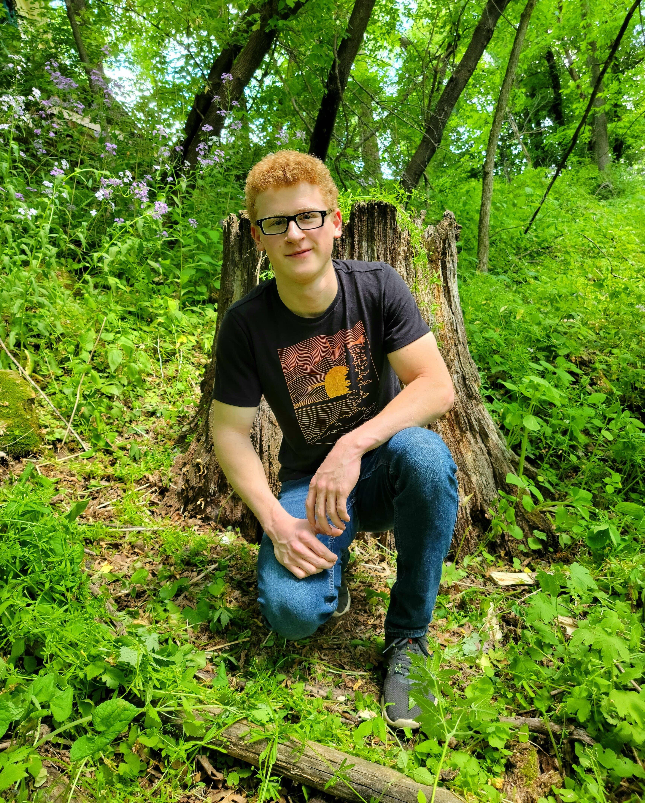

Home

Hi, I'm Liefe Sutliff, a 23-year-old electronic music artist who's been creating and exploring sound since 2013. My journey into music production started with GarageBand during a summer school program, and I've been hooked ever since. Over the years, my style has evolved into a mix of chill, melodic tracks and more upbeat, motivational songs—whatever feels right in the moment.
For me, music is about capturing emotion and telling a story, whether it's something serene to unwind to or an energetic anthem to inspire movement. I love experimenting with different genres and techniques, always aiming to create something that resonates.
Thank you for checking out my music—I hope it connects with you in some way.❤️